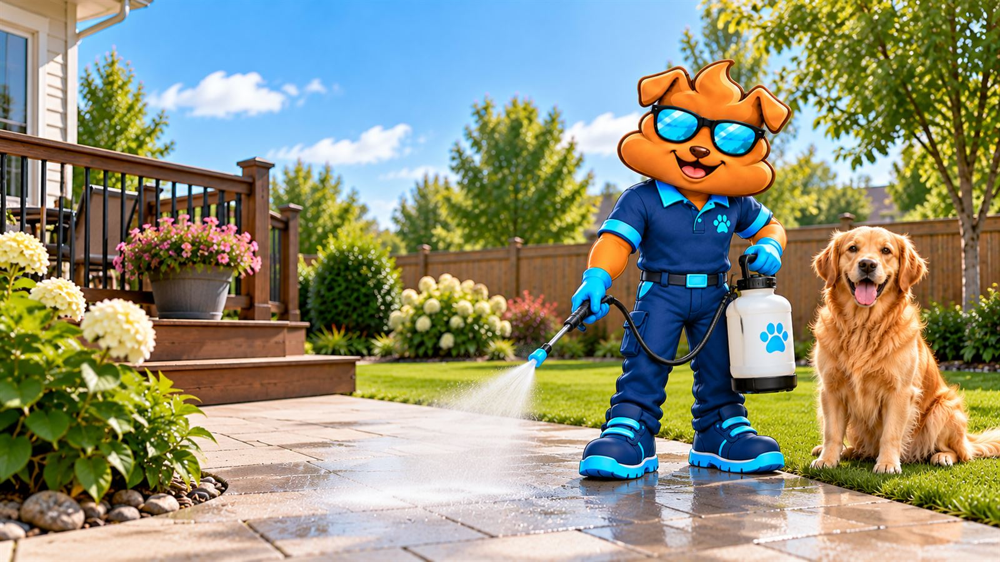
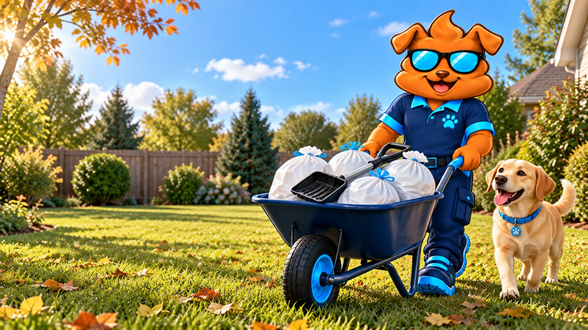

What
A spray for odor
For the outdoor areas you ask about, where a smell lingers on some surfaces.

Yard sanitizing and deodorizing, by request
Yard deodorizing and sanitizing for outdoor dog areas. Build your price here for scooping; text or call and we quote treatment separately.
 See your price before sharing contact details. No payment today.
See your price before sharing contact details. No payment today.
The short version
New and existing customers alike. You do not need to be scooping with us already.
What
For the outdoor areas you ask about, where a smell lingers on some surfaces.
When
It is optional. We add it to a visit only when you ask for it, never automatically.
Texts and calls go to the same number. Want regular scooping as well? See dog waste removal

Not every yard needs it
Four situations where it is worth asking.
 Patio still has opinions after a scoop?
Patio still has opinions after a scoop?
Read the label. We do.
WYSIWash is a chlorine-based treatment for outdoor animal areas, applied with its own sprayer system. We use it only where the product label allows.
The product, and what a treatment day needs.
We may select another product, applied by its own directions.
WYSIWash is a third-party product and trademark. Product availability and directions can change. The current product label and service-day conditions control how and whether an application is performed.
Read the add-on termsStraight answers
It is
It is not
Four steps
We review each request by address, across Indianapolis and nearby Central Indiana communities.
Text us your address, the outside areas you want treated, and what is bothering you.
Surfaces, access, weather, water, drainage, what is nearby, and what is available now.
Removing the waste is the most important step. Then the area gets any preparation it needs.
If we go ahead, we follow the current product label and instructions for your site.
We will tell you whether we can treat it and what it would cost.

Before requesting treatment
No. New and existing customers can both ask. A treatment still follows a scoop either way, because removing the waste deals with what is causing the mess.
No. Build your price covers scooping. Treatment needs a look at your yard first, so we quote it separately. Text us and we will tell you whether it is currently available for your address.
No, and no product is. Whether we can treat an area, how we apply it, and when people and pets can go back on it all come from the current product label and the conditions in your yard. Follow every instruction we give you for people, pets, plants and treated areas.
Results vary. Persistent odor can come from ongoing urine exposure, deeply saturated materials, drainage, standing water, heat, or another source. Treatment may help in some cases, but permanent or complete odor elimination is not guaranteed.
No. We do not promise illness prevention, diagnosis, or treatment. Product efficacy claims depend on the exact organism, surface, concentration, contact time, and current product label. Consult your veterinarian about vaccination, exposure, symptoms, and animal-health concerns.
It varies. It depends on your yard, how your dogs use it, where the odor comes from, the weather, the surfaces, the product directions and what you want. We look at all of that before we recommend anything.

What we do every week
Choose weekly, twice-weekly, every-other-week or one-time cleanup, and see your price before sharing contact details.
Indianapolis and 25 nearby communities. Coverage is decided by ZIP code.
From the Yard Guide
Practical guidance on what a scoop covers, what treatment is for, and planning for more than one dog.